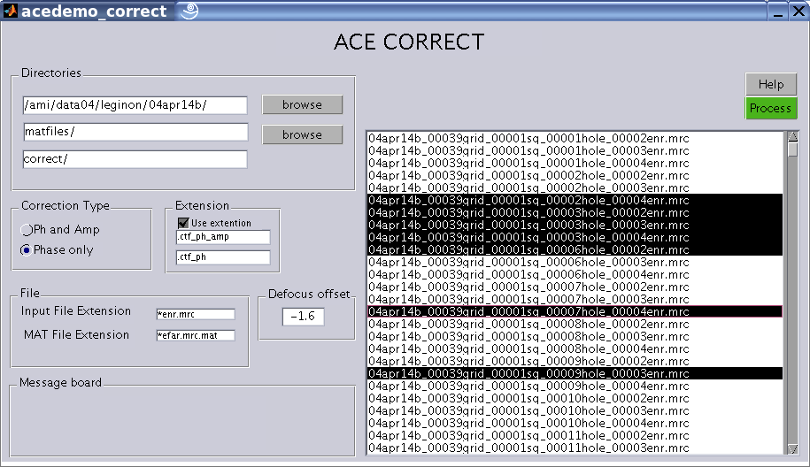

ACEDEMO CORRECT DOCUMENTATION

Directories:
Correction Type: The user has the option of "Phase and Amplitude" correction and "Phase only" correction. The difference between the two is that in Phase only correction only the phase of the CTF is flipped whereas in Phase and Amplitude correction, Wiener filtering is done to correct both phase and amplitude. If the envelope function and noise spectrum parameters are not available then phase only correction is recommended. For example if the parameters calculated from far from focus images are used to correct near to focus images ( after adjusting for the defocus difference ), the envelope function and noise spectrum parameter estimates of far from focus images are not reliable for near to focus images. In such a case phase only correction is recommended.
Extension: The filename extension added to the corrected images. You may choose to save the corrected image with the same name as the input uncorrected image by unchecking the "Use extension" checkbox. Ensure that you are not writing to the input directory if you are not choosing an extension to avoid deletion of the original input images.
File:
Message Board: Displays messages.
Help: Displays this page.
Process: Begins correcting the selected images.
File list: Displays the list of input files
to select from. Left mouse click selects the input file. To select
multiple files use CTRL + click and to select all files use CTRL + a .
|
filename
|
Defocus 1 (used in correction) |
Defocus 2 (used in correction) |
|
filename.mrc |
0.623382 |
0.5817 |